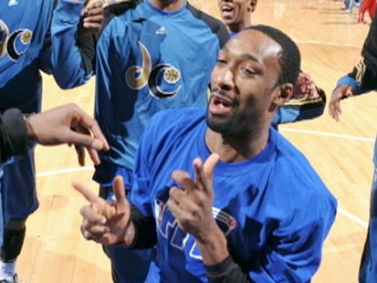
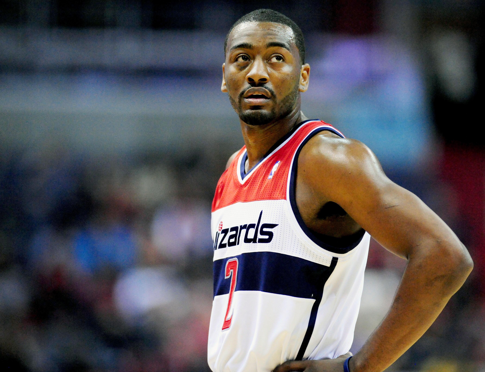
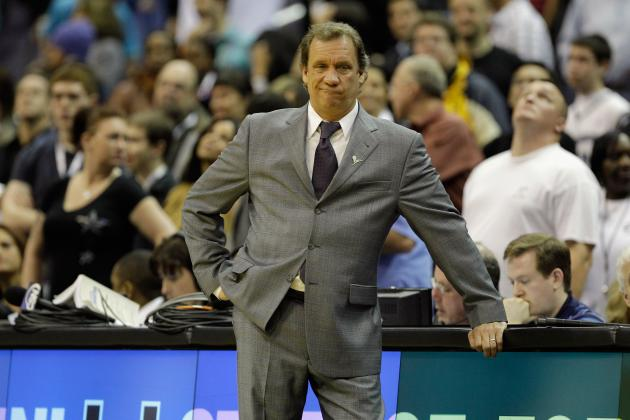
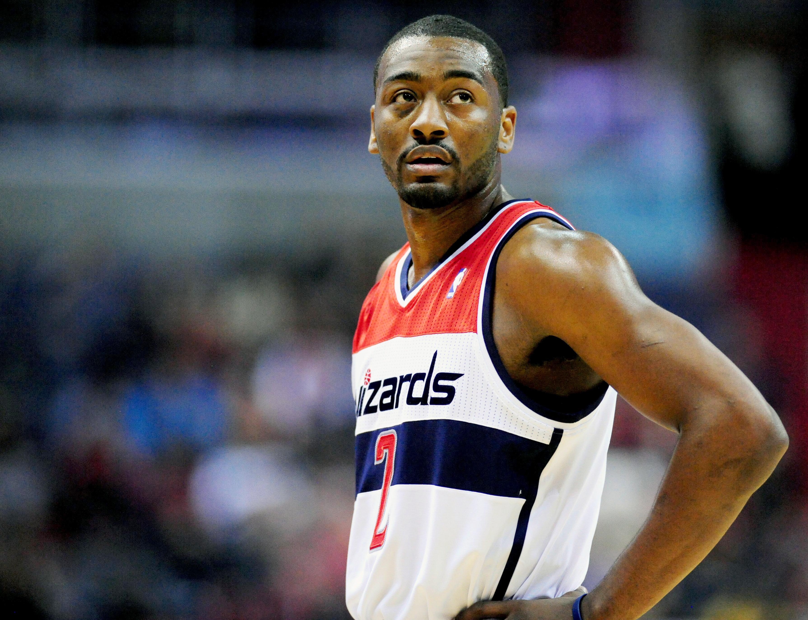
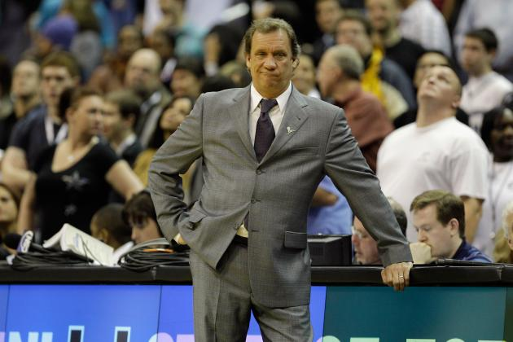

Washington Wizards: Perennial Eastern Conference Basement Dweller?

 



Summary
The Washington Wizards have historically been a consistently mediocre team in the NBA's eastern conference. The team had a resurgence in the late 2000's with Gilbert Arenas, Caron Butler, and Brendan Haywood forming the core of the team, but were never able to overcome Lebron James and the Cleveland Caveliers to advance to the NBA Finals. The Wizards, like the Redskins, have had their fair share of poor moments over the past few decades. A key few are highlighted below for your entertainment.
Disastrous Recent Events in Wizards History
Current Washington Wizards Starting Five
| Marcin Gortat | Center |
| Markieff Morris | Power Forward |
| Otto Porter Jr. | Small Forward |
| Bradley Beal | Shooting Guard |
| John Wall | Point Guard |